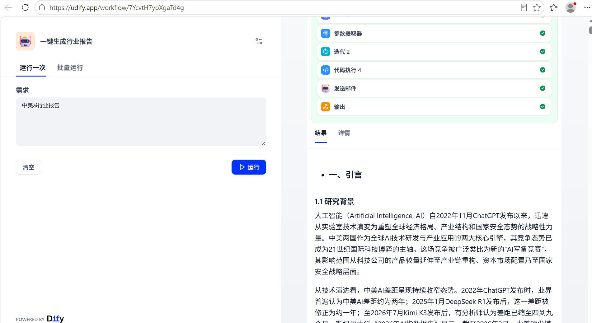
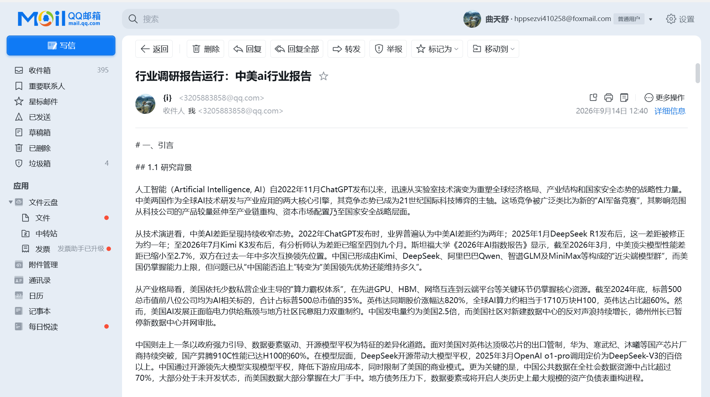

一键生成行业/产品调研报告小助手
从 0 到 1 设计并落地一个 11 节点双迭代并行 Pipeline：输入一句话主题，自动完成检索、提炼、大纲、逐章撰写与邮件交付。
pipeline.yml11 nodes · click steps
> 点击任一步骤，查看对应 Pipeline 节点的设计意图
问题：行业调研报告（如《中美 AI 行业报告》）人工撰写需大量检索、整理与成文，周期长、成本高；通用「单轮对话」直接生成，则上下文易污染、内容易失真、结果不可交付。
我的角色：从 0 到 1 独立完成产品设计与流程编排：节点拆解、模型选型、相关性过滤策略、结构化输出约定，并跑通验证（2026-09-14 全流程运行成功，邮件留痕）。
方案：11 节点双迭代并行 Pipeline（见上方节点图）：搜索 → 抓取 → 提炼 → 大纲 → 并行撰写 → 邮件交付。两处 ×10 并行迭代构成双层并行；DeepSeek-flash 承担批量粗活（提炼/撰写），GPT-4o-mini 负责结构化大纲。
结果：MVP 跑通即用：输入主题 → 自动检索 10 路网页 → 提炼过滤 → 生成大纲 → 10 路并行成章 → Markdown 全文邮件送达。已实际交付完整《中美 AI 行业报告》（2026-09-14 邮件留痕，见下方截图）。
方法论：① 模型成本分层：粗活/精活分模型，控制单次成本；② 双层并行：抓取与撰写均 ×10 并发，压缩串行长流程；③ 相关性过滤：无关网页输出空串，防止上下文污染；④ 结构化优先：用参数提取器取代 prompt 约定，输出稳定可复用。
被否决的方案：单轮长对话直出（上下文易污染、成本不可控）；自建爬虫（反爬与维护成本高）；全链路高配模型（质量收益有限但成本显著上升）。最终选择「开源平权模型干批量粗活 + 商用模型做结构化」的组合。

